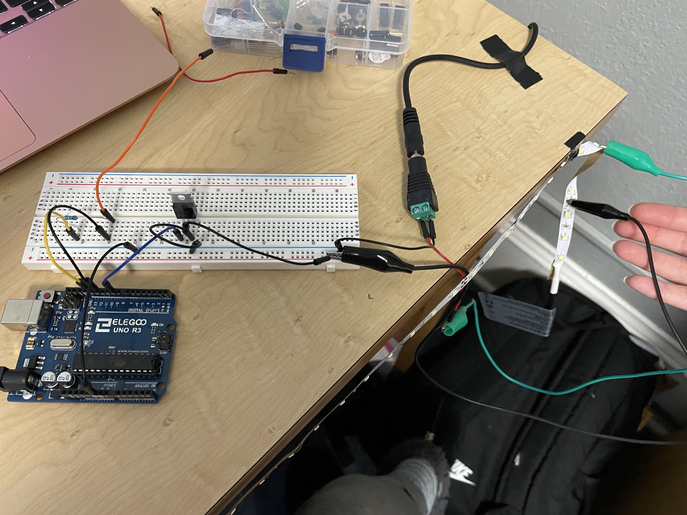
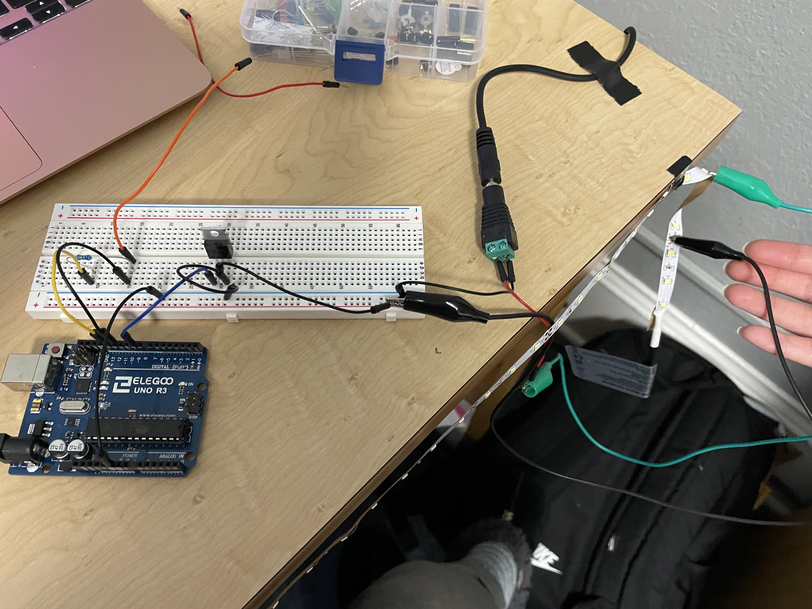

Michelle's Assignment 5!
This week I used my LED strip and capacitive sensing with a wire to create touch-based LEDs.
Here is the schematics of this circuit board.
 

I used a 1M Ohm resistor for the capacitive sensor, based on the guidelines given in class. I chose 1M ohms so that it would still be sensitive to close touch but not too big that it would take too long to sense
The arduino code is below:
#include
int LED_pin = 9; //LED pin
CapacitiveSensor cs_13_12 = CapacitiveSensor(13,12); //13 and 12 pins used, pin 12 for sensor
int LED_value = 0; // initializing LED output value
void setup() {
cs_13_12.set_CS_AutocaL_Millis(0xFFFFFFFF); //turn off autocalibrate on channel 1
}
void loop() {
// put your main code here, to run repeatedly:
long start = millis();
long total1 = cs_13_12.capacitiveSensor(300);
LED_value = map(total1, 0, 2000, 0, 255); //map capacitive sensor to be aligned with the LED brightness value
analogWrite(LED_pin, LED_value); // change the LED pin to be the brightness value based on the capacitive sensing
}
This is the final product! I am happy that it worked, but in the future I think I would want to figure out a way to make it more useful - sensing from me just sitting down and not having to push down on the wire.